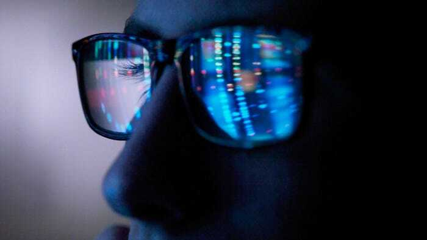

Why Can’t Eye Sleep?
Alexander Newman
Screens have been a cornerstone of human communication and entertainment for the past 100 years. Whether it be to watch football, play the latest game, or watch your favorite streamer, screens are essential to one’s many daily activities. However, researchers have recently discovered the detrimental effects that screens can have on the human body. According to Harvard Medical School, screens emit blue light, which are visible, high frequency electromagnetic waves that can disrupt one’s sleep cycle. .
Before going over blue light and its effects, the sleep cycle must be understood. Sleep is helpfully maintained by the circadian rhythm. The circadian rhythm is an internal, physiological clock used to keep the brain and the body in sync with the sun. This clock is synchronized with the sun through the use of the pineal gland. When blue light containing sunlight strikes ganglion cells in the eye, they signal the pineal gland to secrete less melatonin to the body. Melatonin is a compound that tells the brain that it is time to sleep. The more melatonin is secreted, the sleepier a person gets.
Screens introduce the factor of artificial blue light. Screen usage past sunset increases blue light exposure, preventing melatonin production from ramping up. This also includes any light source, such as a desk lamp. While this may seem beneficial in the night where one wants to get work done, this leads to side effects in one’s body and ability to sleep. Lack of sleep may lead to obesity, heart disease, and diabetes. A Harvard study has shed light on this, where they put 10 people on a schedule that slowly shifted their circadian rhythms from the norm. Researchers discovered the participants' blood sugar level increased, creating a pre-diabetic state. Levels of the hormone leptin also decreased, which regulates hunger. This leads to an increased appetite for food which may lead to obesity. Sleep also helps bolster the immune system by releasing cytokines, antibodies, and pathogen-fighting cells, so lack of sleep can leave the body defenseless, according to Mayo Clinic.
The battle for sleep isn’t completely lost. Does one need to completely cut off screens before bedtime? Not entirely, but while that is the best solution (preferably one to two hours before), alternative solutions exist. Using warmer colored lights near bedtime, such as through lamps or the phone screen, can help mitigate the effects of blue light. You can also invest in blue light blocking glasses or screen protectors, which limit the amount of blue light that reaches the eyes.